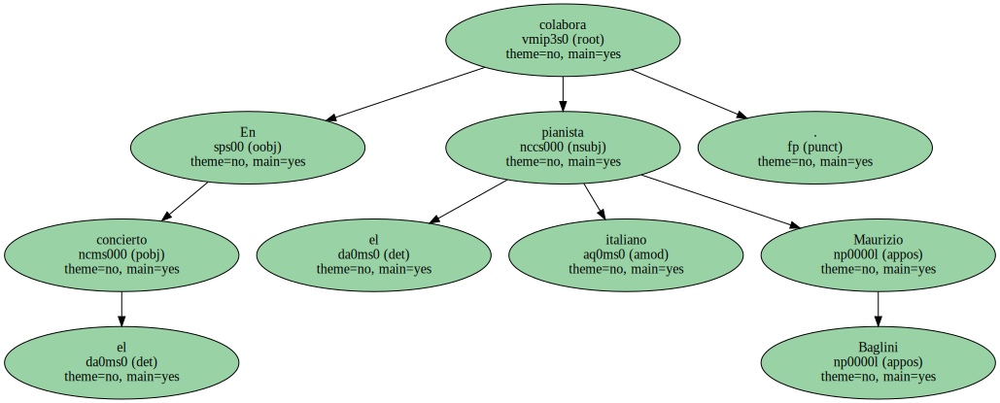
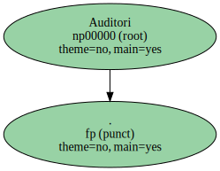
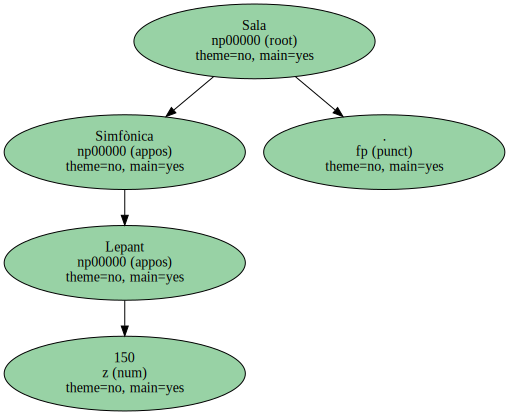
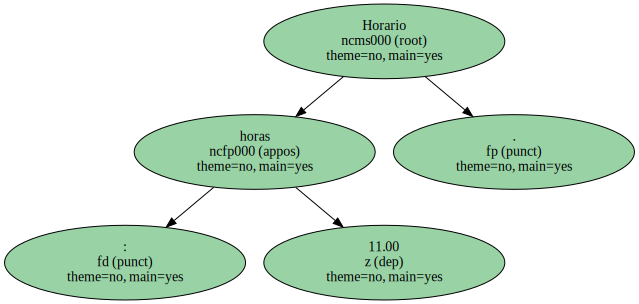
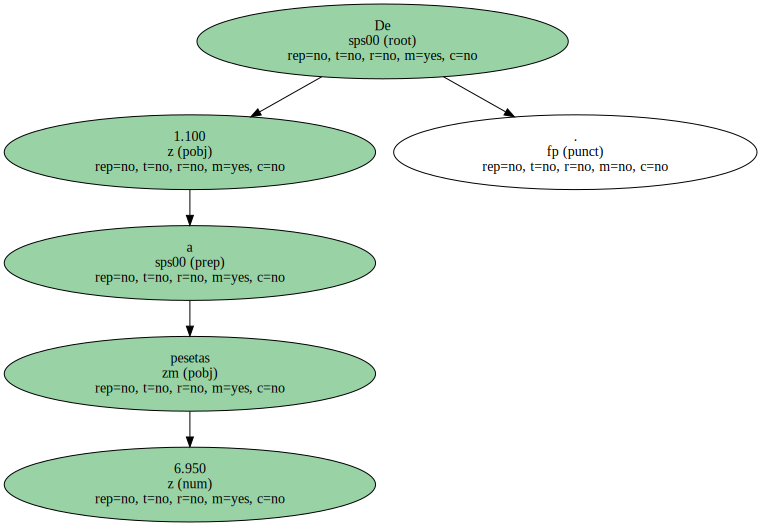

El británico Rumon Gamba dirige a la formación catalana en un programa con piezas de Rossini , Rachmaninov y Bartók.

En el concierto colabora el pianista italiano Maurizio Baglini.
Auditori.
Sala Simfònica Lepant 150.
Horario : 11.00 horas.
De 1.100 a 6.950 pesetas.
